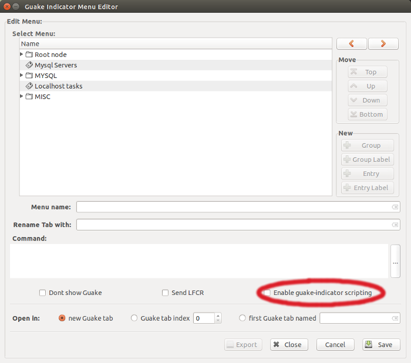
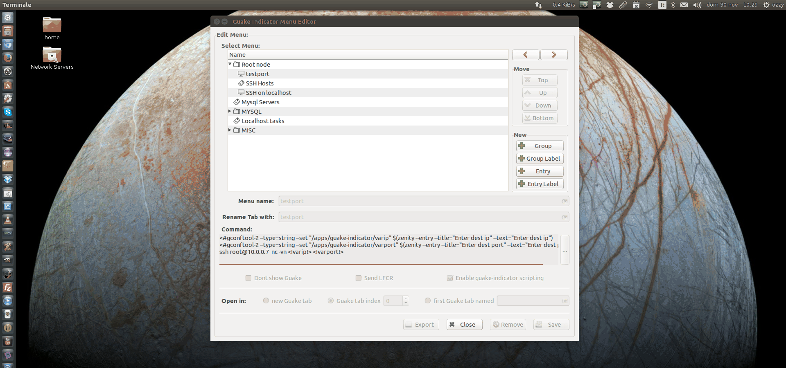

- Guake Indicator
Guake indicator scripting system
Guake indicator provides the ability to add some logic when building a command using the "scripting" feature. To enable the "scripting" mode, the "Enable guake-indicator scripting" checkbox must be checked.
When the script mode is activated, Guake indicator treats the character sequences '<#' and '<! ... !>' in this way:
- <# : Guake indicator sends a system call (invoking a /bin/sh subshell) of the inline command, for example:
<#sleep 2
causes Guake indicator call /bin/sh/sleep 2 on localhost thus pausing the execution for 2 seconds. Keep in mind that Guake indicator will stop sending commands to Guake until the system call is done. - <!..!> : Guake indicator searchs for a gsettings key string value under '/apps/guake-indicator/' and pastes it to the command, for example:
echo <!testkey!>
causes Guake to send the command echo and the content of the key testkey as an argument. You can take advantage of the gconf-editor to inspect the gconf keys.
<#gconftool-2 --type=string --set "/apps/guake-indicator/varip" $(zenity --entry --title="Enter dest ip" --text="Enter dest ip")
<#gconftool-2 --type=string --set "/apps/guake-indicator/varport" $(zenity --entry --title="Enter dest port" --text="Enter dest port")
ssh user@whatever nc -vn <!varip!> <!varport!>
In the above example Guake indicator calls Zenity to display an interactive form in your local machine.The stdout of Zenity is then passed as an argumento to gconftool-2. Gconftool-2 stores the content as a value for /apps/guake-indicator/varip and /apps/guake-indicator/varport keys. Finally Guake indicator send data through the dbus system replacing the !varip! and !varport! substrings with the values of the /apps/guake-indicator/varip and /apps/guake-indicator/varport keys. In this way you can send dynamic,inaccessible local content to Guake.
In the following screenshot I ssh into 10.0.0.4 then using Guake indicator+Zenity+gconftool-2 I scan 10.0.0.4:22 from 10.0.0.7:

Always remember that gconftool-2 stores information on your hard drive. I strongly recommend to do not store passwords or any other sensitive data inside gsettings. For example if you want to perform an SSH autologin use SSH keys and don't use Guake indicator scripting!
Site viewed
 times
times
Special Thanks to all Contributors